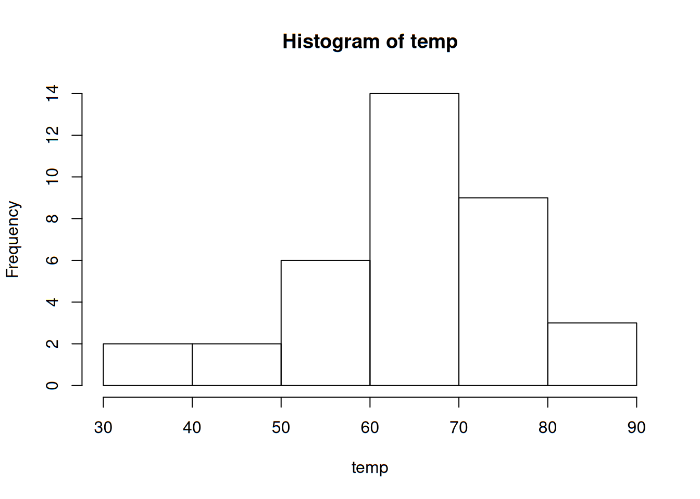
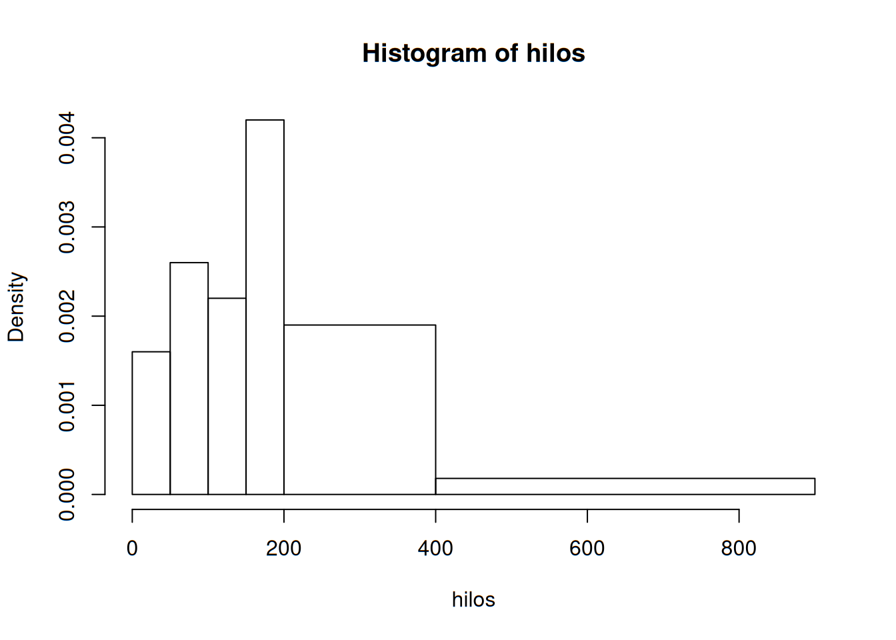
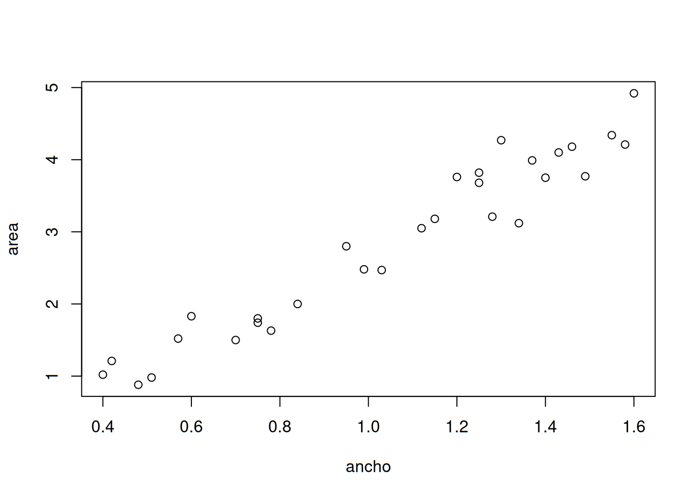

Estadística Descriptiva
Los métodos estadísticos son muy importantes, ya que ellos nos permiten conocer los fenómenos que nos rodean, en aspectos que quizá no nos imaginamos. Por doquier estamos expuestos a los datos, y eso se extiende a científicos e ingenieros en sus actividades profesionales.
Es muy importante definir los objetos que se constituyen en una población de interés. Dicha población puede ser el conjunto de todos los productos elaborados en una fábrica un día determinado, o todos los estudiantes egresados de cierta carrera en la generación 2017, por ejemplo. Cuando tenemos acceso a todos los datos deseados de todos los miembros de una población, tenemos un censo.
Sin embargo, es muy complicado poder realizar censos, ya sea por escasez de tiempo o de dinero. Por ello, se prefiere seleccionar un grupo pequeño de elementos de la población de manera aleatoria, para tener lo que se conoce como una muestra.
Cabe mencionar que en ocasiones, no nos interesan todas las características de los objetos de una población. Por ejemplo, puede que hayamos reunido a 50 personas para analizar su estado de salud. Probablemente debamos preguntarles su edad, su peso, su estatura y tomarles medidas de su temperatura o presión arterial; sin embargo, no tiene sentido preguntarles qué equipo de futbol es su favorito o a qué hora pasan su noticiero predilecto. Lo que necesitamos son sus características.
A las características podemos dividirlas en dos: categóricas y numéricas. Las primeras son etiquetas, como los nombres o la marca de un coche. Las segundas pueden expresarse con números. Definamos una variable como cualquier característica cuyo valor puede cambiar de un sujeto a otro.
Ramas de la Estadística
Dividiremos la Estadística en dos ramas por el momento. En primera instancia, es necesario recopilar, organizar, resumir y presentar los datos; de esto se encarga la Estadística Descriptiva. Por otro lado, se desea extender las propiedades de la muestra hacia la población, mediante inferencias que permitan comprender mejor su comportamiento e incluso pronosticarlo; esa es la función de la Estadística Inferencial.
Estadística Descriptiva en acción
La tragedia que sufrió el transbordador espacial Challenger y sus astronautas en 1986 condujo a varios estudios para investigar las razones de la falla de la misión. La atención se enfocó de inmediato en el comportamiento de los sellos anulares del motor del cohete. He aquí datos derivados de observaciones en x = temperatura del sello anular (°F) en cada encendido de prueba o lanzamiento del motor del cohete del transbordador (Presidential Commission on the Space Shuttle Challenger Accident, Vol. 1, 1986: 129-131). Los datos se presentan en una sola columna para dejar en claro que se refieren a datos univariables. Cabe mencionar que los datos se encuentran en la carpeta datasets del repositorio de la asignatura en GitHub.
## [1] 84 49 61 40 83 67 45 66 70 69 80 58 68 60 67 72 73 70 57 63 70 78 52
## [24] 67 53 67 75 61 70 81 76 79 75 76 58 31A simple vista, los datos así mostrados no dicen gran cosa. Para ello es deseable organizarlos de manera que muestren algún comportamiento en particular. Una de las maneras más burdas es el diagrama de tallo y hojas, el cual se muestra a continuación:
##
## The decimal point is 1 digit(s) to the right of the |
##
## 3 | 1
## 4 | 059
## 5 | 23788
## 6 | 01136777789
## 7 | 000023556689
## 8 | 0134La explicación del diagrama es sencilla: las cifras que representan las decenas se colocan como tallos, mientras que las cifras que son unidades se vuelven hojas. Este diagrama nos permite saber de manera rápida cuáles son las temperaturas más comunes o frecuentes en nuestro conjunto de datos. También puede decirse que es un histograma muy rudimentario.
A continuación se muestra un histograma:

Y para terminar, una gráfica que posteriormente se verá cómo interpretarse y construirse es la gráfica de caja, la cual se muestra a continuación:

Lo anterior, así como la tabla donde se muestran los datos, fue realizado con un software estadístico: R.
Representaciones gráficas y tabulares
Es importante mencionar que existe una notación que debemos considerar: el número de observaciones presentes en un conjunto de datos dado, se denotará por la letra n. También, cada observación se denotará por la letra x acompañada de un subíndice que no tiene ninguna función más que identificar los datos. Es decir, representar una observación como \(x_1\) no implica que esta sea la más pequeña. Con esto en mente, pasamos a revisar las representaciones gráficas de los datos.
Diagrama de tallo y hojas
Anteriormente se habló un poco de este diagrama. Es bastante sencillo y puede aplicarse a números decimales. Veamos los pasos para producirlos:
- Se selecciona uno o más de los primeros dígitos para el tallo. Los dígitos restantes serán las hojas.
- Los valores del tallo se escriben de manera vertical.
- Se anota una hoja por cada observación a la derecha del tallo.
- Se indican las unidades para tallos y hojas en algún lugar de la gráfica.
Una gráfica de tallos y hojas da información sobre los siguientes aspectos de los datos: - Identificación de un valor típico o representativo. - Grado de dispersión en torno al valor típico. - Presencia de brechas en los datos. - Grado de simetría en la distribución de los valores. - Número y localización de crestas. - Presencia de valores afuera de la gráfica.
A modo de práctica, tomemos los siguientes valores que representan el flujo de agua en regaderas de Australia en litros por minuto, para n = 130. Se muestra también el código en R para mostrar y calcular el diagrama:
flujo <- scan("datasets/002-flujo.txt")
flujo## [1] 4.6 12.3 7.1 7.0 4.0 9.2 6.7 6.9 11.5 5.1 11.2 10.5 14.3 8.0
## [15] 8.8 6.4 5.1 5.6 9.6 7.5 7.5 6.2 5.8 2.3 3.4 10.4 9.8 6.6
## [29] 3.7 6.4 8.3 6.5 7.6 9.3 9.2 7.3 5.0 6.3 13.8 6.2 5.4 4.8
## [43] 7.5 6.0 6.9 10.8 7.5 6.6 5.0 3.3 7.6 3.9 11.9 2.2 15.0 7.2
## [57] 6.1 15.3 18.9 7.2 5.4 5.5 4.3 9.0 12.7 11.3 7.4 5.0 3.5 8.2
## [71] 8.4 7.3 10.3 11.9 6.0 5.6 9.5 9.3 10.4 9.7 5.1 6.7 10.2 6.2
## [85] 8.4 7.0 4.8 5.6 10.5 14.6 10.8 15.5 7.5 6.4 3.4 5.5 6.6 5.9
## [99] 15.0 9.6 7.8 7.0 6.9 4.1 3.6 11.9 3.7 5.7 6.8 11.3 9.3 9.6
## [113] 10.4 9.3 6.9 9.8 9.1 10.6 4.5 6.2 8.3 3.2 4.9 5.0 6.0 8.2
## [127] 6.3 3.8 6.0 8.3Si en un momento dado no sabemos exactamente dónde se encuentra el archivo fuente de nuestros datos, podemos utilizar el código
flujo <- scan(file.choose()). Este nos abrirá una ventana que nos permitirá elegir el archivo de manera normal.
Construyamos nuestro diagrama:
stem(flujo)##
## The decimal point is at the |
##
## 2 | 23
## 3 | 2344567789
## 4 | 01356889
## 5 | 00001114455666789
## 6 | 0000122223344456667789999
## 7 | 00012233455555668
## 8 | 022333448
## 9 | 012233335666788
## 10 | 2344455688
## 11 | 2335999
## 12 | 37
## 13 | 8
## 14 | 36
## 15 | 0035
## 16 |
## 17 |
## 18 | 9- ¿Cuál es una velocidad de flujo o gasto típico o representativo?
- ¿Parece estar la gráfica altamente concentrada o dispersa?
- ¿Es la distribución de valores razonablemente simétrica? Si no, ¿cómo describiría el alejamiento de la simetría?
- ¿Describiría cualquier observación como alejada del resto de los datos (un valor extremo)?
Diagrama de puntos
Es un resumen atractivo de datos numéricos cuando el conjunto es razonablemente pequeño o existen pocos valores de datos distintos. Cada observación está representada por un punto sobre la ubicación correspondiente en una escala de medición horizontal. Cuando un valor ocurre más de una vez, existe un punto por cada ocurrencia y estos puntos se apilan verticalmente. Como con la gráfica de tallos y hojas, una gráfica de puntos da información sobre la localización, dispersión, extremos y brechas. Usemos como ejemplo el conjunto de las temperaturas del Challenger.
stripchart(temp, method = 'stack')
Tablas de frecuencia
Vamos a trabajar ahora con datos categóricos. Cuando hablamos de categorías, hablamos de variables nominales, es decir, nombres o etiquetas. Por lo tanto, el tratamiento que debemos darles difiere de los números. Por principio de cuentas, debemos tabularlos. Esto se consigue con una tabla de frecuencias. Primero leemos el archivo con los datos:
marca <- c(read.table("datasets/003-marca.txt"))
marca## $V1
## [1] Apple Apple Samsung HTC Apple Xiaomi Nokia
## [8] Samsung Motorola Samsung Samsung Apple Apple Huawei
## [15] Motorola Samsung Samsung Apple Motorola Nokia Huawei
## [22] Huawei Motorola Samsung Samsung Apple Samsung LG
## [29] Apple Samsung Motorola Huawei
## Levels: Apple HTC Huawei LG Motorola Nokia Samsung XiaomiConstruir una tabla de frecuencias implica contar el número de veces que una etiqueta se repite. A esa cantidad se le conoce como la frecuencia absoluta. Enseguida creamos la tabla:
mar <- table(marca)
mar## marca
## Apple HTC Huawei LG Motorola Nokia Samsung Xiaomi
## 8 1 4 1 5 2 10 1De aquí en delante podemos complementar la tabla de frecuencias agregando la frecuencia acumulada y la relativa. Llenémosla:
| Marca | Frecuencia | Frec. acumulada | Frec. relativa | Frec. rel. acumulada |
|---|---|---|---|---|
| Apple | 8 | 8 | 0.25 | 0.25 |
| HTC | 1 | 9 | 0.03125 | 0.28125 |
| Huawei | 4 | 13 | 0.125 | 0.40625 |
| LG | 1 | 14 | 0.03125 | 0.4375 |
| Motorola | 5 | 19 | 0.15625 | 0.59375 |
| Nokia | 2 | 21 | 0.0625 | 0.65625 |
| Samsung | 10 | 31 | 0.3125 | 0.96875 |
| Xiaomi | 1 | 32 | 0.03125 | 1 |
La frecuencia acumulada, también conocida como frecuencia absoluta acumulada, se corresponde con la suma de las frecuencias que han aparecido hasta el momento. Por ejemplo, la frecuencia acumulada para Huawei es de 13, que se corresponde con los 8 de Apple, la única de HTC y las 4 unidades de la propia Huawei. La frecuencia relativa es el cociente de la frecuencia absoluta entre el total de observaciones, por ejemplo, para Apple se corresponde con el resultado de dividir sus 8 unidades entre el total, que fueron 32. Esos cocientes se acumulan para obtener la frecuencia relativa acumulada.
Ahora bien, la única ocasión en la que se recomienda utilizar un diagrama de sectores -también conocido como de pastel-, es cuando se trabaja con variables nominales (etiquetas o categorías). Para su construcción, basta con tomar la frecuencia relativa de cada categoría y multiplicarla por 360, que son la totalidad de los grados contenidos en un círculo completo.
| Marca | Grados |
|---|---|
| Apple | 90 |
| HTC | 11.25 |
| Huawei | 45 |
| LG | 11.25 |
| Motorola | 56.25 |
| Nokia | 22.5 |
| Samsung | 112.5 |
| Xiaomi | 11.25 |
El círculo se divide en las 8 secciones con magnitudes en grados ya calculadas. El diagrama quedaría de la siguiente manera (elaborada con R):
pie(mar)
Distribuciones de frecuencia
En ocasiones es necesario trabajar con valores que no se repiten tanto, como en el caso que se presenta enseguida.
Las compañías eléctricas requieren información sobre el consumo de los clientes para obtener pronósticos precisos de demandas. Investigadores de Wisconsin Power and Light determinaron el consumo de energía (BTU) durante un periodo particular con una muestra de 90 hogares calentados con gas. Las siguientes observaciones son el consumo promedio:
Consumo <- scan("datasets/004-horno.txt")
Consumo## [1] 2.97 4.00 5.20 5.56 5.94 5.98 6.35 6.62 6.72 6.78 6.80
## [12] 6.85 6.94 7.15 7.16 7.23 7.29 7.62 7.62 7.69 7.73 7.87
## [23] 7.93 8.00 8.26 8.29 8.37 8.47 8.54 8.58 8.61 8.67 8.69
## [34] 8.81 9.07 9.27 9.37 9.43 9.52 9.58 9.60 9.76 9.82 9.83
## [45] 9.83 9.84 9.96 10.04 10.21 10.28 10.28 10.30 10.35 10.36 10.40
## [56] 10.49 10.50 10.64 10.95 11.09 11.12 11.21 11.29 11.43 11.62 11.70
## [67] 11.70 12.16 12.19 12.28 12.31 12.62 12.69 12.71 12.91 12.92 13.11
## [78] 13.38 13.42 13.43 13.47 13.60 13.96 14.24 14.35 15.12 15.24 16.06
## [89] 16.90 18.26Es notorio que los valores son bastantes y que rara vez se repiten. Cuando nuestros datos son así, se recomienda agruparlos en una distribución de frecuencias. Dicha distribución divide los datos en intervalos y cuenta las ocasiones en que los mismos datos se encuentran entre estos intervalos. A estos últimos se les conoce también como clases.
El primer paso es determinar el número de datos. En esta ocasión ya lo sabemos, son 90. Si en un momento dado no fuera así, podemos contarlos con el siguiente comando:
n <- length(Consumo)
n## [1] 90Entonces toca definir el número de clases. No existe una regla inamovible para hacer esto, pero usualmente se utiliza uno de los tres criterios siguientes:
La raíz cuadrada del número de datos. Al momento de contar el total de observaciones, se calcula la raíz de dicho valor. \[ total\ de\ clases \ \approx \sqrt {total\ de\ observaciones} \]
sqrt(n)## [1] 9.486833Redondeamos hacia arriba y definimos el número de clases como diez.
La Regla de Sturges. Fue propuesta en 1926 y es la que utilizan en su mayoría los programas estadísticos para el cálculo y elaboración de histogramas y distribuciones de frecuencia. Su fórmula es:
\[ k=1+log_2(n) \] Donde \(k\) es el número de clases y \(n\) es el tamaño de muestra. Para este caso, el número de clases sería:
ksturges <- 1+log2(n)
ksturges## [1] 7.491853La regla de Scott. Propuesta en 1992, utiliza la distribución normal como base y recomienda utilizar la expresión:
\[ k=(2n)^{1/3} \]
kscott <- (2*n)^(1/3)
kscott## [1] 5.646216Con el número de clases ya definido, lo siguiente en realizar será determinar la anchura o límites de la clase. Igual que en el número de clases, no existe una regla infalible para hacerlo, y muchas veces puede dejarse a criterio de la persona que realiza el análisis. Se pueden mencionar dos pautas:
Al tanteo. En este caso obtenemos el número más bajo y el más alto y buscamos unos límites que nos permitan englobar dichos números sin que quepa la posibilidad de dejar algún valor fuera. Por ejemplo, el número más bajo (o mínimo) es \(2.97\), por lo cual podríamos definir \(2.5\) o incluso \(2\) como límite inferior de la primera clase; en el otro extremo, el valor máximo es \(18.26\), por lo que podremos dejar \(18.5\), \(19\) o incluso \(20\) como límite superior. Cabe mencionar que el \(20\) sería para asegurarnos de tener clases «simétricas».
Por fórmula. En este caso, prescindimos de estar buscando un número adecuado y lo calculamos directamente con la siguiente expresión:
\[ Anchura=\frac {R}{NC} \] Donde \(R\) es el rango (esto es, la diferencia entre el valor máximo y el mínimo) y \(NC\) es el número de clases. Supongamos que queremos 9 clases, entonces encontremos el máximo y el mínimo:
max(Consumo)## [1] 18.26min(Consumo)## [1] 2.97Y ahora calculamos la anchura:
anchura <- (max(Consumo)-min(Consumo))/9
anchura## [1] 1.698889Al ser un valor decimal, se recomienda redondearse hacia arriba, quedando en dos. Así que nuestras clases comenzarían en 2 como límite inferior, y aumentarán de dos en dos hasta alcanzar el límite superior: 20.
Podríamos graficar el histograma directamente, pero queremos obtener la distribución de frecuencias también. Para ello, ejecutamos la función hist pero con la opción de no mostrarlo y con el número de clases que hayamos definido.
df <- hist(Consumo, nclass = 9, plot = FALSE, right = FALSE)
df## $breaks
## [1] 2 4 6 8 10 12 14 16 18 20
##
## $counts
## [1] 1 5 17 24 20 16 4 2 1
##
## $density
## [1] 0.005555556 0.027777778 0.094444444 0.133333333 0.111111111 0.088888889
## [7] 0.022222222 0.011111111 0.005555556
##
## $mids
## [1] 3 5 7 9 11 13 15 17 19
##
## $xname
## [1] "Consumo"
##
## $equidist
## [1] TRUE
##
## attr(,"class")
## [1] "histogram"intervalos <- df$breaks
clases <- cut(Consumo, breaks = intervalos, dig.lab = 2, right = FALSE)
tabla.frec <- table(clases)
tabla <- as.data.frame(tabla.frec)
tabla## clases Freq
## 1 [2,4) 1
## 2 [4,6) 5
## 3 [6,8) 17
## 4 [8,10) 24
## 5 [10,12) 20
## 6 [12,14) 16
## 7 [14,16) 4
## 8 [16,18) 2
## 9 [18,20) 1El histograma quedaría así:
hist(Consumo, right = FALSE)Histograma con anchos de clase desiguales
Es posible que las clases de ancho-igual no sean una opción sensible si un conjunto de datos “se alarga” hacia un lado o el otro. Como ejemplo, veamos el siguiente caso:
En un estudio de ruptura de la urdimbre durante el tejido de telas (Technometrics, 1982: 63), se sometieron a prueba 100 muestras de hilo. Se determinó el número de ciclos de esfuerzo hasta ruptura para cada muestra de hilo y se obtuvieron los datos siguientes:
hilos <- scan("datasets/005-hilos.txt")
hilos## [1] 86 146 251 653 98 249 400 292 131 169 175 176 76 264 15 364 195
## [18] 262 88 264 157 220 42 321 180 198 38 20 61 121 282 224 149 180
## [35] 325 250 196 90 229 166 38 337 65 151 341 40 40 135 597 246 211
## [52] 180 93 315 353 571 124 279 81 186 497 182 423 185 229 400 338 290
## [69] 398 71 246 185 188 568 55 55 61 244 20 284 393 396 203 829 239
## [86] 236 286 194 277 143 198 264 105 203 124 137 135 350 193 188Trazamos nuestro histograma:
hist(hilos, breaks = 'Sturges', right = FALSE)Aquí podemos ver que el histograma se alarga demasiado hacia la derecha, mostrando clases con muy pocas observaciones. En este tipo de ocasiones, puede utilizar un histograma basado en densidades, más que en frecuencias. Ello implica obtener anchuras diferentes.
hist(hilos, breaks = c(0,50, 100,150, 200,400,600,900), right = FALSE)Después de determinar las frecuencias y las frecuencias relativas, se calcula la altura de cada rectángulo con la fórmula \[ altura=\frac{frecuencia\ relativa\ de\ clase}{ancho\ de\ clase} \]
Las alturas del rectángulo resultante en general se conocen como densidades y la escala vertical es la escala de densidades. Esta prescripción también funcionará cuando los anchos de clase son iguales.
hist(hilos, breaks = c(0,50, 100,150, 200,400,900), right = FALSE)
Medidas de tendencia
Los resúmenes visuales son bastante atractivos y deseables para obtener percepciones o nociones preliminares. Sin embargo, para un mejor análisis es mejor obtener un resumen basado en la interpretación de medidas numéricas. Suponga que un conjunto de observaciones de la forma \(x_1\), \(x_2\), \(x_3\), donde cada \(x_i\), (la \(i\) es solo un indicador o índice, es decir, no tiene valor numérico). ¿Qué es lo que nos importa saber de ellos?
La media
La medida más conocida y útil del centro es la media o promedio aritmético del conjunto. Si los números se denotan como \(x_i\), entonces la media se indica como \(\bar{x}\). Se calcula con la siguiente expresión:
\[ \bar{x}=\frac{x_1+x_2+ ... +x_n}{n}=\frac{\sum_{i=1}^n x_i}{n} \] Podemos escribir el numerador de la expresión informalmente como \(\sum x_i\), entendiendo que la suma incluye todas las observaciones muestrales.
Ejemplo
Veamos el caso de un proceso de elaboración de calderas de acero. El metal se encuentra sometido a esfuerzo cáustico, el cual causa agrietamientos, cuya longitud se recogió en la siguiente lista:
grietas <- scan("datasets/007-caustic.txt")
grietas## [1] 16.1 9.6 24.9 20.4 12.7 21.2 30.2 25.8 18.5 10.3 25.3 14.0 27.1 45.0
## [15] 23.3 24.2 14.6 8.9 32.4 11.8 28.5Sumemos todos los valores de la lista, y enseguida dividamos entre el número de observaciones.
Lo primero lo logramos con:
suma <- sum(grietas)
suma## [1] 444.8El tamaño muestral se obtiene con:
observaciones <- length(grietas)
observaciones## [1] 21Ahora sí, calculemos la media:
media <- suma/observaciones
media## [1] 21.18095R tiene la función ya predeterminada:
mean(grietas)## [1] 21.18095Ejercicio
Trabajemos ahora con otro conjunto de valores:
m <- scan("datasets/004-horno.txt")
m## [1] 2.97 4.00 5.20 5.56 5.94 5.98 6.35 6.62 6.72 6.78 6.80
## [12] 6.85 6.94 7.15 7.16 7.23 7.29 7.62 7.62 7.69 7.73 7.87
## [23] 7.93 8.00 8.26 8.29 8.37 8.47 8.54 8.58 8.61 8.67 8.69
## [34] 8.81 9.07 9.27 9.37 9.43 9.52 9.58 9.60 9.76 9.82 9.83
## [45] 9.83 9.84 9.96 10.04 10.21 10.28 10.28 10.30 10.35 10.36 10.40
## [56] 10.49 10.50 10.64 10.95 11.09 11.12 11.21 11.29 11.43 11.62 11.70
## [67] 11.70 12.16 12.19 12.28 12.31 12.62 12.69 12.71 12.91 12.92 13.11
## [78] 13.38 13.42 13.43 13.47 13.60 13.96 14.24 14.35 15.12 15.24 16.06
## [89] 16.90 18.26stem(m)##
## The decimal point is at the |
##
## 2 | 0
## 4 | 0269
## 6 | 046788992223667799
## 8 | 03345566778134456688888
## 10 | 002333444556011234677
## 12 | 223367799144456
## 14 | 02412
## 16 | 19
## 18 | 3mean(m)## [1] 10.03844Por lo anterior, podemos entender la media como una especie de balanza o punto de apoyo que nos permite equilibrar los pesos (las observaciones) en un eje horizontal. Ahora bien, este concepto tiene un gran problema: es muy sensible a valores extremos. Por ejemplo, consideremos el conjunto de temperaturas del Challenger:
temp <- scan("datasets/001-challenger.txt")
temp## [1] 84 49 61 40 83 67 45 66 70 69 80 58 68 60 67 72 73 70 57 63 70 78 52
## [24] 67 53 67 75 61 70 81 76 79 75 76 58 31Como ya habíamos visto, la media resultaba ser:
mean(temp)## [1] 65.86111Pero si agregamos un dato muy extraño o no esperado, aún más que el propio 31, como por ejemplo un catastrófico 350:
n.media <- (sum(temp)+350)/(length(temp)+1)
n.media## [1] 73.54054Nuestra media se recorre demasiado hacia la derecha del conjunto, muy cerca del final de los datos, con el afán de «equilibrarlos». Cuando se trabaja con observaciones que pueden tener muchos datos extremos, es recomendable no elegir la media para representar su tendencia. En su lugar, se recomienda la mediana.
La mediana
La mediana es una medida de tendencia que literalmente, parte al conjunto de observaciones (previamente ordenadas de menor a mayor) por la mitad. Es decir, es el valor de en medio. Se denota por \(\tilde x\). La mediana se obtiene de dos maneras, dependiendo del número de observaciones \(n\).
Si el número de observaciones es impar, la mediana es el valor que se encuentra en la siguiente posición:
\[ \tilde x=valor\ en\ el\ lugar\ \# \frac{n+1}{2} \ ordenado \]
Si es par, debemos localizar los dos valores centrales y calcular su media; el resultado es la mediana.
\[ \tilde x=promedio\ de\ los \ valores\ \# \frac{n}{2}\ y\ el\ \# \frac{n}{2}+1 \ ordenados \]
Ejemplo 1
El riesgo de desarrollar deficiencia de hierro es especialmente alto durante el embarazo. El problema con la detección de tal deficiencia es que algunos métodos para determinar el estado del hierro pueden ser afectados por el estado de gravidez mismo. Considérense las siguientes observaciones de concentración de receptores de transferrina de una muestra de mujeres con evidencia de laboratorio de anemia por deficiencia de hierro evidente (“Serum Transferrin Receptor for the Detection of Iron Deficiency in Pregnancy”, Amer. J. of Clinical Nutrition, 1991: 1077-1081):
Fe <- scan("datasets/008-hierro.txt")
Fe## [1] 11.9 9.4 8.3 7.6 9.7 20.4 11.5 9.4 15.2 10.4 16.2 9.3Lo primero que debemos hacer es ordenar los datos de menor a mayor. Lo conseguimos en R con lo siguiente:
orden <- sort(Fe)
orden## [1] 7.6 8.3 9.3 9.4 9.4 9.7 10.4 11.5 11.9 15.2 16.2 20.4Ahora contamos el total de observaciones:
n <- length(orden)
n## [1] 12Tenemos un conjunto par de observaciones, así que obtengamos los números que ocupan las posiciones centrales. Primero, el primero:
n1 <-orden[n/2]
n1## [1] 9.7Y ahora el segundo:
n2 <- orden[(n/2)+1]
n2## [1] 10.4Calculemos su media:
mediana1 <- (n1+n2)/2
mediana1## [1] 10.05Ejemplo 2
La exposición a productos microbianos, especialmente endotoxina, puede tener un impacto en la vulnerabilidad a enfermedades alérgicas. El artículo (“Dust Sampling Methods for Endotoxin-An Essential, But Underestimated Issue”, Indoor Air, 2006: 20-27) consideró temas asociados con la determinación de concentración de endotoxina. Se obtuvieron dos tipos de muestra para datos sobre concentración (EU/mg) en polvo asentado: hogares urbanos (U) y otra de casas campestres (C), las cuales fueron amablemente suministrados por los autores del artículo citado.
A continuación se muestra la muestra urbana:
u <- scan("datasets/009-toxinas-U.txt")
u## [1] 6 5 11 33 4 5 80 18 35 17 23Obtenemos el tamaño muestral:
tamano <- length(u)
tamano## [1] 11En este caso tenemos un tamaño muestral impar, así que resulta más sencillo obtener la mediana. Ordenamos la muestra y enseguida obtenemos la posición del número central. La lista ordenada:
u.ordenada <- sort(u)
u.ordenada## [1] 4 5 5 6 11 17 18 23 33 35 80La posición del valor central:
mediana2 <- u.ordenada[(tamano+1)/2]
mediana2## [1] 17Este es el valor de la mediana. Hasta ahora hemos estado utilizando comandos aritméticos para determinarla, sin embargo, existe un comando único en R para obtenerla. Para el primer conjunto de valores:
median(Fe)## [1] 10.05Para el segundo:
median(u)## [1] 17La media \(\mu\) y la mediana \(\tilde \mu\) poblacionales en general no serán idénticas. Si la distribución de la población es positiva o negativamente asimétrica, entonces \(\mu \neq \tilde \mu\). Cuando éste es el caso, al hacer inferencias primero se debe decidir cuál de las dos características de la población es de mayor interés y luego proceder como corresponda.

Solo en distribuciones normales simétricas
La mediana también puede calcularse con la función quantile, ya que a final de cuentas, es el segundo cuartil:
quantile(u, probs = 0.5)## 50%
## 17Podemos calcular cualquier cuantil (también conocido como percentil), siendo los más comunes los cuartiles:
quantile(u, probs = 0.25)## 25%
## 5.5quantile(u, probs = 0.75)## 75%
## 28quantile(u, probs = 0.20)## 20%
## 5Los cuartiles dividen el conjunto de datos precisamente en cuartas partes. Como puede deducirse de lo anterior, el primer cuartil toma solo el primer 25% de las observaciones, dejando libre el restante 75%. El tercer cuartil hace lo mismo pero a la inversa: toma el 25% superior y deja libres los primeros datos, correspondiendo al 75% inferior.
Medidas de dispersión
En ocasiones queremos saber qué tan dispersos se encuentran los valores de una muestra entre sí o con respecto a la media. Para ello utilizamos las medidas de dispersión. Usualmente son tres: el rango, la varianza y la desviación estándar.
El rango
Considera solo la diferencia entre el valor máximo y el mínimo, por lo que no toma en cuenta los valores intermedios:
u## [1] 6 5 11 33 4 5 80 18 35 17 23rango <- max(u) - min(u)rango## [1] 76La varianza
Su fórmula es la siguiente:
\[ s^2=\frac{\sum_{i=1}^n (x_i-\bar x)^2}{n-1} \]
Y su obtención se consigue con:
var(u)## [1] 497.2727La desviación estándar
No es más que la raíz cuadrada de la varianza. Se obtiene directamente con:
sd(u)## [1] 22.29961Ejercicio
La cantidad de luz reflejada por las hojas ha sido utilizada para varios propósitos, incluidas la evaluación del color del césped, la estimación del estado del nitrógeno y la medición de la biomasa. El artículo (“Leaf Reflectance-Nitrogen-Chlorophyll Relations in Buffel-Grass”, Photogrammetric Engr. and Remote Sensing, 1985: 463-466) dio las siguientes observaciones obtenidas por medio de espectrofotogrametría, de la reflexión de las hojas en condiciones experimentales.
hojas <- read.table("datasets/011-hojas.txt", header = T)
hojas## Observación xi
## 1 1 15.2
## 2 2 16.8
## 3 3 12.6
## 4 4 13.2
## 5 5 12.8
## 6 6 13.8
## 7 7 16.3
## 8 8 13.0
## 9 9 12.7
## 10 10 15.8
## 11 11 19.2
## 12 12 12.7
## 13 13 15.6
## 14 14 13.5
## 15 15 12.9Nótese que para capturar un archivo que no consta de una sola columna, en R podemos utilizar la función
read.tablecon la funciónheader = TRUE. Para llamar una sola columna podemos utilizar la nomenclaturanombredelatabla$nombredelacolumna, o biennombredelacolumna[,númerodecolumna].
La idea es calcular la varianza de las observaciones. Para ello debemos invocar solamente la columna que nos interesa, que es la que contiene los datos como tales:
datos <- hojas$xi
datos## [1] 15.2 16.8 12.6 13.2 12.8 13.8 16.3 13.0 12.7 15.8 19.2 12.7 15.6 13.5
## [15] 12.9datos2 <- hojas[,2]
datos2## [1] 15.2 16.8 12.6 13.2 12.8 13.8 16.3 13.0 12.7 15.8 19.2 12.7 15.6 13.5
## [15] 12.9Calculemos la varianza de dicha columna:
var(datos)## [1] 3.91781Podemos calcular directamente sobre la columna:
var(hojas[,2])## [1] 3.91781Calculemos ahora la desviación estándar:
sd(hojas[,2])## [1] 1.979346Gráficas de caja
Un gráfico que ha demostrado ser muy útil en la representación efectiva de los datos es precisamente el diagrama de caja. Este se construye a partir de medidas que son resistentes a los datos extremos, es decir, la mediana y los cuartiles. Las características que nos muestra el gráfico son el centro, la dispersión, la asimetría y la presencia -o ausencia- de observaciones extremas. Para ello es necesario encontrar los siguientes números: - Observaciones más pequeñas - Primer cuartil - Mediana - Tercer cuartil - Observaciones más grandes
La distancia existente entre cuartiles es lo que se conoce como rango intercuartílico, y es representado por la altura de la caja dibujada si el es vertical (por lo tanto, se corresponde a la anchura si el eje fuera horizontal).
Ejercicio
Se utilizó ultrasonido para reunir los datos de corrosión adjuntos de la placa de piso de un tanque elevado utilizado para almacenar petróleo crudo (“Statistical Analysis of UT Corrosion Data from Floor Plates of a Crude Oil Aboveground Storage Tank”, Materials Eval., 1994: 846-849); cada observación es la profundidad de picadura más grande en la placa, expresada en milésimas de pulgada.
us <- scan("datasets/012-ultrasonido.txt")
us## [1] 40 52 55 60 70 75 85 85 90 90 92 94 94 95 98 100 115
## [18] 125 125Obtengamos las medidas mencionadas anteriormente:
min(us) #número más pequeño## [1] 40quantile(us, probs = 0.25) #primer cuartil## 25%
## 72.5median(us) #mediana## [1] 90quantile(us, probs = 0.75) #tercer cuartil## 75%
## 96.5max(us) #número más grande## [1] 125Podemos obtener dichas medidas (e incluso la media) con un simple comando en R:
summary(us)## Min. 1st Qu. Median Mean 3rd Qu. Max.
## 40.00 72.50 90.00 86.32 96.50 125.00Trazamos un eje (puede ser horizontal o vertical) con la escala adecuada, en este caso podemos dividir de diez en diez, partiendo desde 30 hasta llegar a 130. Sobre dicho eje trazamos un rectángulo cuyo lado izquierdo se encuentre en el primer cuartil (72.5); y su lado derecho en el tercero (96.5). Dentro del rectángulo dibujaremos la línea que represente la mediana (90). Al finalizar esto, trazamos una línea que salga del lado izquierdo del rectángulo y termine en el número más pequeño (40). Así mismo, trazamos una línea que llegue al número más alto (125). La gráfica debería quedarnos más o menos como sigue:
boxplot(us)Presencia de datos extremos
La presencia de datos extremos puede ser contraproducente. Por lo tanto no es deseable tomarlos en cuenta si se quiere asumir que la distribución de los datos es normal. Por ello, debemos indicar explícitamente la presencia de datos atípicos, de los cuales podemos distinguir entre moderados y extremos. Para esto, debemos calcular el rango intercuartílico (\(f_s\)) y multiplicarlo por \(1.5\). Cualquier dato que se encuentre a más de \(1.5f_s\) del extremo de la caja se considera atípico o apartado. De entre estos valores apartados, asumiremos que todos son moderados con excepción de los que se encuentren a más de \(3f_s\) del cuartil más cercano.
Ejercicio con datos apartados
Los efectos de descargas parciales en la degradación de materiales para cavidades aislantes tienen implicaciones importantes en relación con las duraciones de componentes de alto voltaje. Considérese la siguiente muestra de 25 anchos de pulso de descargas lentas en una cavidad cilíndrica de polietileno. (Estos datos son consistentes con un histograma de 250 observaciones en el artículo “Assessment of Dielectric Degradation by Ultrawide-band PD Detection”, IEEE Trans. on Dielectrics and Elec. Insul., 1995: 744-760.) El autor del artículo señala el impacto de una amplia variedad de herramientas estadísticas en la interpretación de datos de descarga.
desc <- scan("datasets/013-descargas.txt")
desc## [1] 5.3 8.2 13.8 74.1 85.3 88.0 90.2 91.5 92.4 92.9 93.6
## [12] 94.3 94.8 94.9 95.5 95.8 95.9 96.6 96.7 98.1 99.0 101.4
## [23] 103.7 106.0 113.5Calculemos las 5 medidas primordiales para el gráfico de caja:
summary(desc)## Min. 1st Qu. Median Mean 3rd Qu. Max.
## 5.30 90.20 94.80 84.86 96.70 113.50Es muy notorio que el dato inferior está muy alejado del primer cuartil. ¿Qué tan alejado se encuentra? ¿Habrá más en la parte inferior? ¿Habrá alguno en la superior? Calculemos \(f_s\) y luego multipliquémoslo por 1.5:
fs <- quantile(desc, probs = 0.75)-quantile(desc, probs = 0.25)
fs## 75%
## 6.5lim <- fs*1.5
lim## 75%
## 9.75Toda observación que se encuentre separada por más de 9.75 de cualquier cuartil será un dato atípico. Calculemos los valores que delimitarán lo atípico en ambos extremos:
lims <-quantile(desc, probs = 0.75)+lim
lims## 75%
## 106.45limi <- quantile(desc, probs = 0.25)-lim
limi## 25%
## 80.45Cualquier observación por encima de 106.45 o por debajo de 80.45 será atípica. Notemos que tenemos uno solo por encima,el máximo valor de hecho: \(113.5\). Por la parte inferior existen cuatro: 5.3, 8.2, 13.8 y 74.1.
Ahora veamos si tenemos datos atípicos extremos en la parte superior:
limsx <- quantile(desc, probs = 0.75)+3*fs
limsx## 75%
## 116.2Ni siquiera el dato máximo supera esta marca. Así que no hay datos extremos en la parte superior de la caja.
En seguida veamos en la parte inferior:
limix <- quantile(desc, probs = 0.25)-3*fs
limix## 25%
## 70.7Podemos darnos cuenta que en este lado sí existen datos extremos: 5.3, 8.2 y 13.8. Por lo tanto, el rectángulo (la caja) sí se traza de manera normal, pero las líneas (los bigotes) no. Sus extremos llegan solamente hasta los datos que se consideran normales: 85.3 en el lado inferior y 106.0 en el superior. Las observaciones apartadas moderadas se trazan como círculos oscuros y las apartadas extremas como círculos claros. Cabe mencionar que algunos paquetes estadísticos no distinguen los datos anormales moderados de los extremos, como es el caso de R. Tracemos nuestra caja:
boxplot.default(desc, horizontal = T)Análisis de dispersión
Introducción
En el mundo de las matemáticas estamos muy acostumbrados a relacionar un par de variables de manera determinística, es decir, sabemos que cuando modificamos una variable, esta hará que otra cambie. Un buen ejemplo de esto es cuando llenamos el tanque de gasolina, sabemos que si compramos 20 litros, nos costará veinte veces el precio de un litro. Puesto que el litro se encuentra, supongamos a \(\$20.00\), entonces pagaremos veinte veces ese precio: \(\$400.00\) en total. Sin embargo, no siempre las relaciones entre variables son así de sencillas. Habrá pares de variables cuyo comportamiento sea solo en parte explicado por su contraparte. Volviendo al caso de la gasolina, con esos veinte litros que cargamos podremos recorrer una cantidad de kilómetros. ¿Podemos saber exactamente cuántos? No es fácil, ya que el rendimiento de la gasolina depende no solamente de la distancia, si no de otros factores, como por ejemplo el tipo de conducción, el terreno recorrido, las condiciones atmosféricas, etc. Es este segundo tipo de relación entre variables el que nos interesa: una relación no determinística. Para estudiar estas relaciones contamos con el análisis de regresión, que es parte de la Estadística.
Sabemos que existe una relación determinística entre dos variables que se puede representar mediante la expresión:
\[ \hat y=\beta_0+\beta_1x \]
Este arreglo traza en el plano una línea recta que tendra a \(\beta_0\) como su intersección en el eje \(y\) o valor de arranque, mientras que el coeficiente \(\beta_1\) se corresponde con la pendiente o cambio promedio de la propia \(y\). Consideremos pues, que de acuerdo a la expresión de arriba, \(y\) es la variable dependiente, pronosticada, explicada o influenciada, mientras \(x\) es la variable independiente, pronosticadora, explicativa o influenciadora. En otras palabras, \(\beta_0\) es el valor de \(y\) cuando \(x\) es nula; por otro lado, por cada unidad que \(x\) cambie, \(y\) estará cambiando \(\beta_1\) veces. A partir de ahora se trabajará con datos bivariables, es decir, datos con valores correspondientes a \(x\) y \(y\). El primer paso para comenzar un análisis de regresión es construir un gráfico de puntos bivariable, donde cada par \((x_i,y_i)\) será representado por un punto en el plano \(xy\).
Ejemplo 1
Los problemas visuales y musculoesqueléticos asociados con el uso de terminales con pantallas de visualización (VDT, por sus siglas en inglés) se han vuelto un tanto comunes en años recientes. Algunos investigadores se han enfocado en la dirección vertical de la mirada fija como causa del cansancio e irritación de los ojos. Se sabe que esta relación está estrechamente relacionada con el área de la superficie ocular (OSA, por sus siglas en inglés), así que se requiere un método de medir el área de la superficie ocular. Los datos representativos adjuntos sobre \(y=\) OSA (cm2) y \(x=\) ancho de la fisura palprebal (es decir, el ancho horizontal de la apertura del ojo (en cm) se tomó del artículo “Analysis of Ocular Surface Area for Comfortable VDT Workstation Layout” (Ergonomics, 1996: 877-884). No se da el orden en el cual se obtuvieron las observaciones, así que por conveniencia aparecen en orden creciente de los valores \(x\).
osa <- read.table("datasets/014-osa.txt", header = T)
head(osa)## x y
## 1 0.40 1.02
## 2 0.42 1.21
## 3 0.48 0.88
## 4 0.51 0.98
## 5 0.57 1.52
## 6 0.60 1.83El conjunto de datos completo se encuentra en la carpeta datasets en la página de la asignatura en GitHub. Ahora bien, procedamos a trazar el gráfico:
ancho <- osa$x
area <- osa$y
plot(ancho, area)
Podemos observar en este gráfico que existen valores de \(x\) que se repiten, pero no les corresponden los mismos valores en \(y\), como es el caso de ambos \(0.75\) en \(x\), cuyos valores difieren para \(y\) en cuanto a que uno es de \(1.80\) y el segundo es de \(1.74\). Con esto podemos notar que los valores de \(y\) no dependen exclusivamente de \(x\), sino de otros factores que de momento, no conocemos. Sin embargo, podemos deducir o pronosticar un valor de \(y\) que corresponda a uno de \(x\) que propongamos; debido a que es notorio que sí existe una relación lineal entre ambas variables, ya que al aumento de una, le corresponde el de la otra. Debemos encontrar una expresión que represente esta relación y su fuerza.
Dicha expresión para un modelo determinístico \(\hat y=\beta_0+\beta_1x\), indica que el valor observado de \(y\) es una función lineal de \(x\). La generalización apropiada de esto a un modelo probabilístico supone que el valor esperado de \(Y\) es una función lineal de \(x\), pero que con \(x\) fija, la variable \(Y\) difiere de su valor esperado en una cantidad aleatoria.
La ecuación de regresión cambia entonces para agregar el elemento probabilístico: el término de error aleatorio o desviación aleatoria.
\[ Y=\beta_0+\beta_1x+\epsilon \] Donde \(\epsilon\) es precisamente el error aleatorio. Sin este término, todos los puntos se encontrarían sobre la línea que representa la ecuación misma, pero al trazarla para este caso, podremos darnos cuenta de que no es así. Podemos pensar entonces que la distancia entre cada punto que representa un par de observaciones a la línea es precisamente el término de error aleatorio que le corresponde a dicho par. Tracemos una línea que represente la relación entre variables:
Aquí se observa precisamente lo que se mencionaba nateriormente, la distancia que existe entre cada punto y la línea que representa la relación lineal entre ambas variables:
Método de mínimos cuadrados
Se remite a los tiempos del matemático alemán Gauss, y consiste de las siguientes fórmulas para la obtención de la ecuación de regresión:
\[ b_1=\frac{\sum x_iy_i-\frac{\sum x_i\sum y_i}{n}}{\sum x_i^2-\frac{(\sum x_i)^2}{n}} \\ \ \\ b_0=\bar y-b_1 \bar x \]
Ejemplo 2
El concreto sin finos, hecho de un agregado grueso uniformemente graduado y una pasta de cemento y agua, es benéfico en áreas propensas a lluvias intensas debido a sus excelentes propiedades de drenaje. El artículo “Pavement Thickness Design for No-Fines Concrete Parking Lots” (J. of Transportation Engr., 1995: 476-484) empleó un análisis de mínimos cuadrados al estudiar cómo \(y=\) porosidad (%) está relacionada con \(x=\) peso unitario (pcf) en especímenes de concreto. Considere los siguientes datos representativos, mostrados en formato tabular conveniente para calcular los valores de los estadísticos resumidos:
concreto <- read.table("datasets/015-concreto.txt", header = T)
concreto## peso porosidad
## 1 99.0 28.8
## 2 101.1 27.9
## 3 102.7 27.0
## 4 103.0 25.2
## 5 105.4 22.8
## 6 107.0 21.5
## 7 108.7 20.9
## 8 110.8 19.6
## 9 112.1 17.1
## 10 112.4 18.9
## 11 113.6 16.0
## 12 113.8 16.7
## 13 115.1 13.0
## 14 115.4 13.6
## 15 120.0 10.8Calculemos los valores que necesitamos para encontrar cada coeficiente. Definimos primero los vectores que utilizaremos para el análisis. El primero como peso:
peso <- concreto$peso #definimos el vector "peso"
peso## [1] 99.0 101.1 102.7 103.0 105.4 107.0 108.7 110.8 112.1 112.4 113.6
## [12] 113.8 115.1 115.4 120.0Y el segundo como porosidad:
porosidad <- concreto$porosidad #definimos el vector "porosidad"
porosidad## [1] 28.8 27.9 27.0 25.2 22.8 21.5 20.9 19.6 17.1 18.9 16.0 16.7 13.0 13.6
## [15] 10.8Ahora obtengamos la suma de ambos vectores y asignémoslo a sus propias variables. Primero la sumatoria de peso:
peso.suma <- sum(peso)
peso.suma## [1] 1640.1Y luego la de porosidad.
porosidad.suma <- sum(porosidad)
porosidad.suma## [1] 299.8Enseguida calculamos las medias de cada vector:
peso.media <- mean(peso)
peso.media## [1] 109.34porosidad.media <- mean(porosidad)
porosidad.media## [1] 19.98667Toca calcular las columnas de \(peso^2\), \(porosidad^2\) y \(peso*porosidad\) y luego sus sumatorias. Vector peso2:
peso2 <- peso^2 #elevamos peso al cuadrado
peso2## [1] 9801.00 10221.21 10547.29 10609.00 11109.16 11449.00 11815.69
## [8] 12276.64 12566.41 12633.76 12904.96 12950.44 13248.01 13317.16
## [15] 14400.00Su sumatoria:
peso2.suma <- sum(peso2)
peso2.suma## [1] 179849.7Vector porosidad2:
porosidad2 <- porosidad^2 #elevamos porosidad al cuadrado
porosidad2## [1] 829.44 778.41 729.00 635.04 519.84 462.25 436.81 384.16 292.41 357.21
## [11] 256.00 278.89 169.00 184.96 116.64Sumatoria de porosidad2:
porosidad2.suma <- sum(porosidad2)
porosidad2.suma## [1] 6430.06Vector peso*porosidad:
pesoxporosidad <- peso*porosidad # multiplicamos ambas columnas
pesoxporosidad## [1] 2851.20 2820.69 2772.90 2595.60 2403.12 2300.50 2271.83 2171.68
## [9] 1916.91 2124.36 1817.60 1900.46 1496.30 1569.44 1296.00pesoxporosidad.suma <- sum(pesoxporosidad)
pesoxporosidad.suma## [1] 32308.59Procedemos a resolver para \(b_1\). Para no colocar código complicado de leer, vamos a dividir la expresión en dos cálculos, el numerador:
num.b1 <- pesoxporosidad.suma-(peso.suma * porosidad.suma)/length(peso)
num.b1## [1] -471.542Y el denominador:
den.b1 <- peso2.suma-peso.suma^2/length(peso)
den.b1## [1] 521.196Como paso final del cálculo, los dividimos:
b1 <- num.b1/den.b1
b1## [1] -0.9047307Lo que hicimos fue la siguiente operación:
\[ b_1=\frac{32308.59-(1640.1*299.8)/15}{179849.7-1640.1/15}=\frac{-471.542}{521.196}=-0.9047 \]
El cálculo de \(b_0\) es más sencillo. Tomamos la media de la porosidad y le restamos el producto de la media del peso y $b_1_.
b0 <- porosidad.media-b1*peso.media
b0## [1] 118.9099Expresado con cantidades, lo que hicimos fue: \[ b_0=19.98-(-0.9047)*(109.34)=118.9099 \]
La ecuación de regresión para este ejercicio será entonces de la siguiente manera:
\[ \hat y=118.91-0.905x \]
Con lo anterior, se estima que el cambio de porosidad esperado asociado con un incremento de una unidad en el peso unitario es de \(\approx -0.905%\) (una reducción de 0.905%). La figura siguiente, muestra que la línea de mínimos cuadrados proporciona un excelente resumen de la relación entre las dos variables.
r2 <- lm(porosidad~peso)
plot(peso, porosidad)
abline(r2)Todo lo anterior puede ser conseguido con una sola línea de código en R:
rl <- lm(porosidad~peso)
rl##
## Call:
## lm(formula = porosidad ~ peso)
##
## Coefficients:
## (Intercept) peso
## 118.9099 -0.9047Aquí podemos observar que Intercept es nuestro coeficiente \(b_0\) y peso se corresponde con \(b_1\). El siguiente paso es obtener el valor pronosticado de \(y\) para un determinado valor de \(x\). Para ello sustituimos en nuestra ecuación de regresión un peso de 109 y resolvemos para \(y\):
118.9099 - 0.9047*109## [1] 20.2976Lo anterior implica que para un peso de 109, la porosidad esperada sería de 20.2976. Podemos sustituir tantos valores de \(x\) como queramos, pero no se recomienda que sean muy diferentes a los que se encuentran originalmente en la tabla de datos.
Coeficiente de determinación
Mientras el valor de \(b_1\) nos indica si la relación entre las dos variables es positiva, no tenemos de momento una medida que nos cuantifique qué tan fuerte es dicha relación. Para ello contamos con el coeficiente de determinación, el cual podemos obtenr a partir del coeficiente de correlación, fácil de calcular en R:
coef.cor <- cor(peso, porosidad)
coef.cor## [1] -0.9868573Este coeficiente nos indica la naturaleza de la relación. Al tener signo negativo, nos confirma lo que \(b_1\) ya mostró: relación negativa. Pero aún no nos indica qué tan fuerte es dicha relación. Para ello calculamos el cuadrado de dicho coeficiente:
coef.cor^2## [1] 0.9738874La relación es bastante alta, ya que el coeficiente de determinación oscila en un rango muy pequeño, de cero a uno. Mientras más se acerque al uno, más exitoso es nuestro modelo explicando la naturaleza de lo que estamos estudiando. Convertido en porcentaje, nos indica que \(x\) explica el 97.39% de la variación de \(y\); o lo que es lo mismo, el 97.39% de la variación en la porosidad es explicada por el peso.
El coeficiente de determinación también puede ser obtenido mediante la sentencia:
summary(rl)##
## Call:
## lm(formula = porosidad ~ peso)
##
## Residuals:
## Min 1Q Median 3Q Max
## -1.7754 -0.5727 -0.1325 0.6034 1.6818
##
## Coefficients:
## Estimate Std. Error t value Pr(>|t|)
## (Intercept) 118.90992 4.49912 26.43 1.10e-12 ***
## peso -0.90473 0.04109 -22.02 1.12e-11 ***
## ---
## Signif. codes: 0 '***' 0.001 '**' 0.01 '*' 0.05 '.' 0.1 ' ' 1
##
## Residual standard error: 0.938 on 13 degrees of freedom
## Multiple R-squared: 0.9739, Adjusted R-squared: 0.9719
## F-statistic: 484.8 on 1 and 13 DF, p-value: 1.125e-11Con la cual, bajo el nombre de R-squared, aparece nuestro valor ya obtenido. Es importante notar que aparecen dos de estos. El primero (Multiple…) es el que tomamos para modelos que solo contengan una variable dependiente y otra independiente. El segundo (Ajusted…) es útil para modelos multivariables.